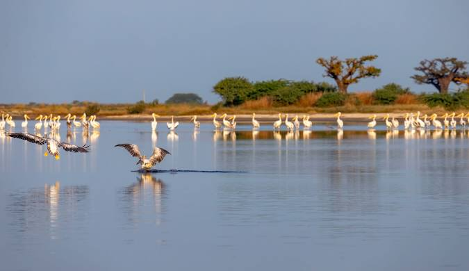

Delta del Saloum: Laberinto de Agua
El Delta del Saloum (o Sine-Saloum) es un impresionante mosaico natural de manglares, canales y más de 200 islas situado a unos 100 km al sur de Dakar, en Senegal. Un Ecosistema de manglares y canales declarado Patrimonio de la Humanidad. Un paraíso para la observación de fauna donde habitan flamencos rosa y pelícanos entre islas de sal creadas por los antepasados Serer.